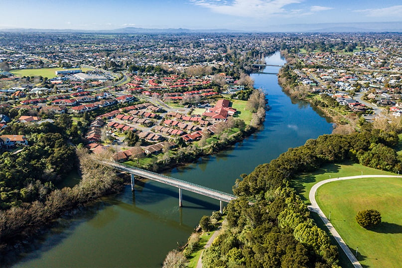

Hamilton is a city in the Waikato region of New Zealand's North Island. Hamilton Gardens, a sprawling public park, features elaborate themed gardens ranging from Italian Renaissance to Japanese and traditional Maori styles. The Waikato Museum displays Maori art and artefacts. Next door, ArtsPost gallery focuses on local art. The first place to build the Temple in the southern Hemisphere and second built in Polynesia.
